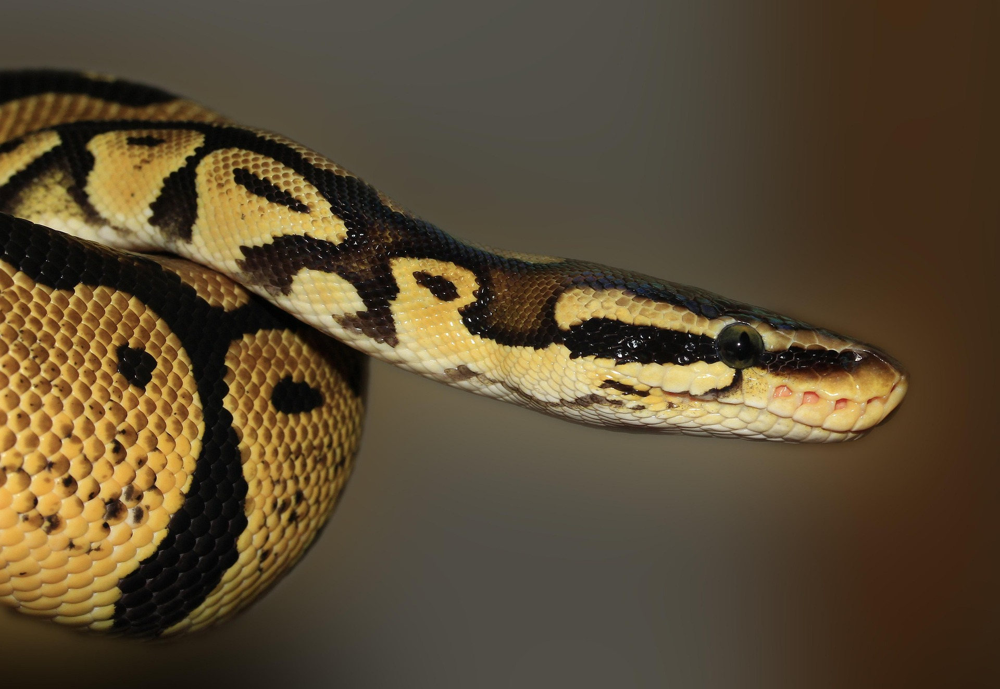
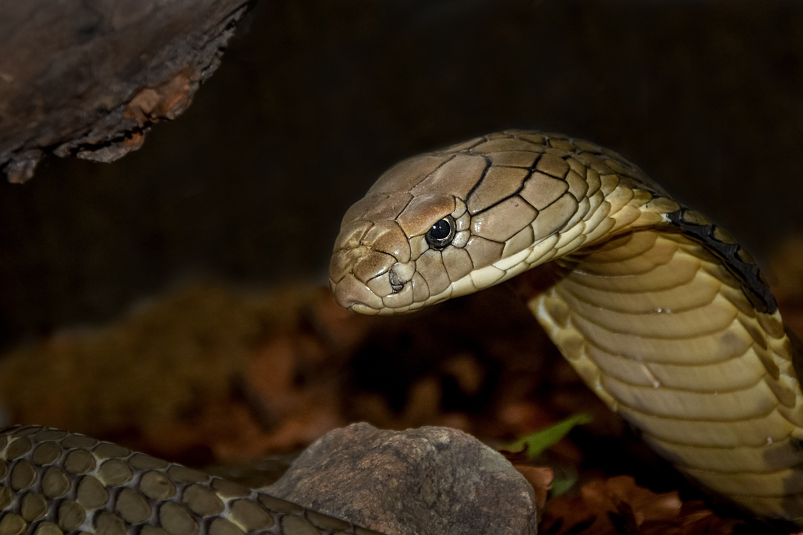
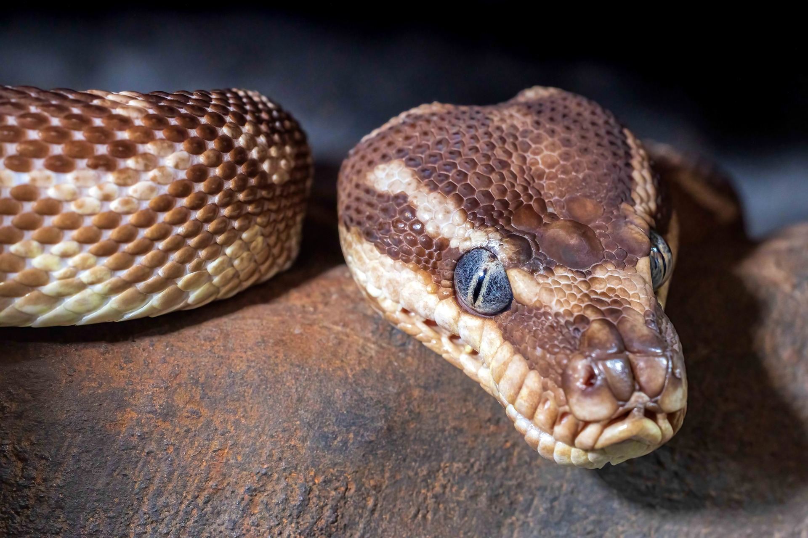
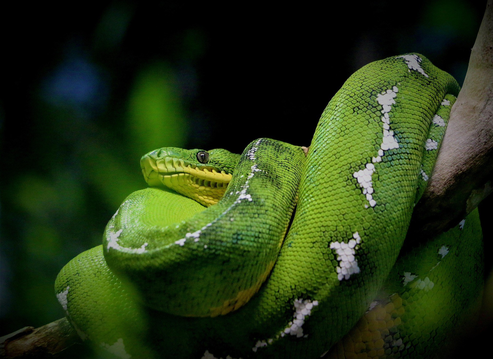
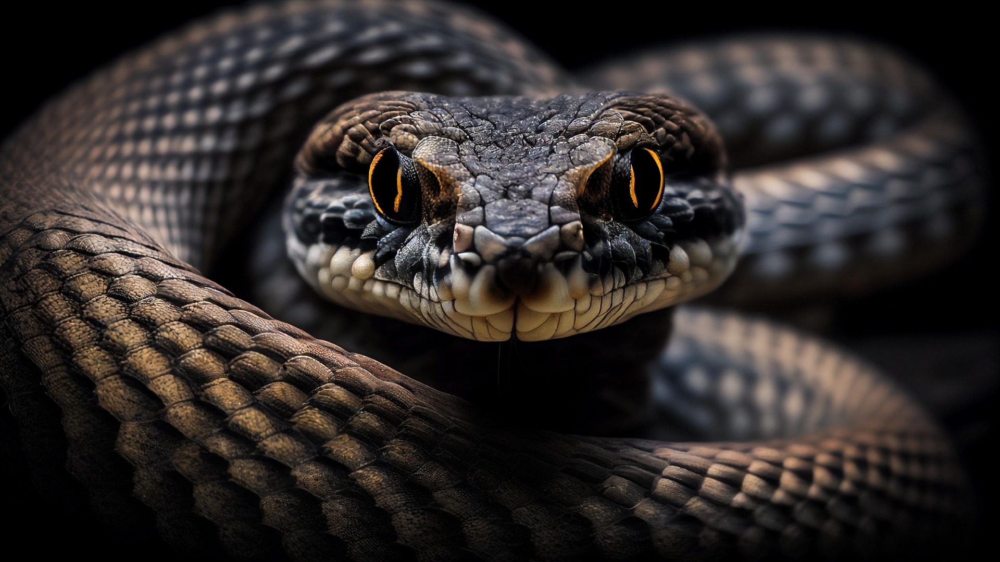
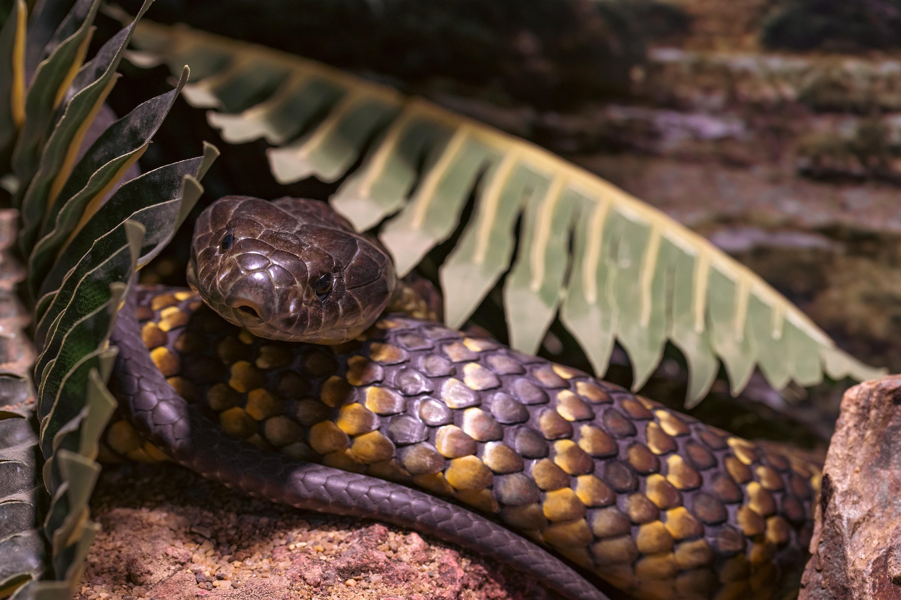
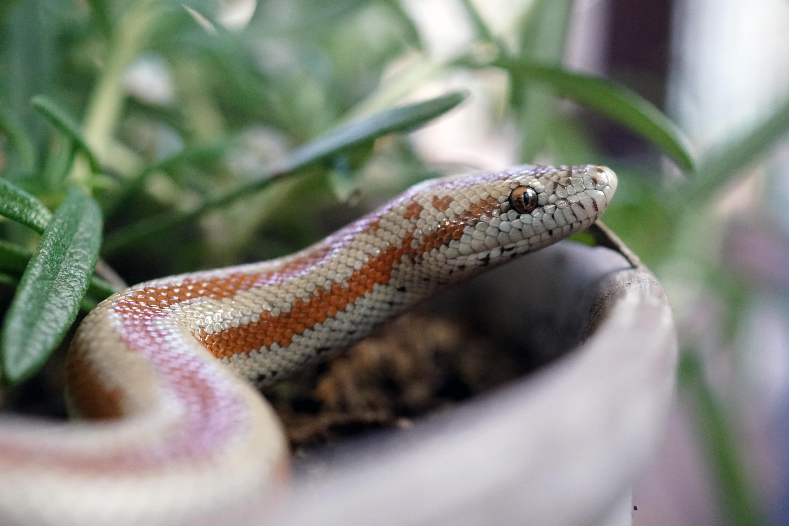
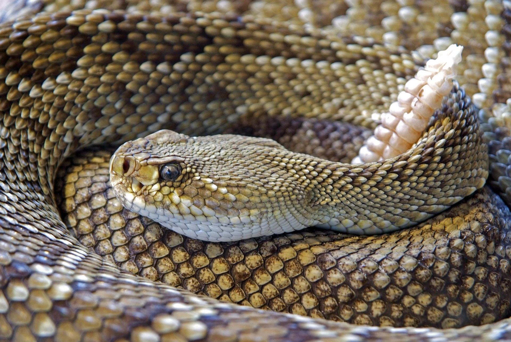
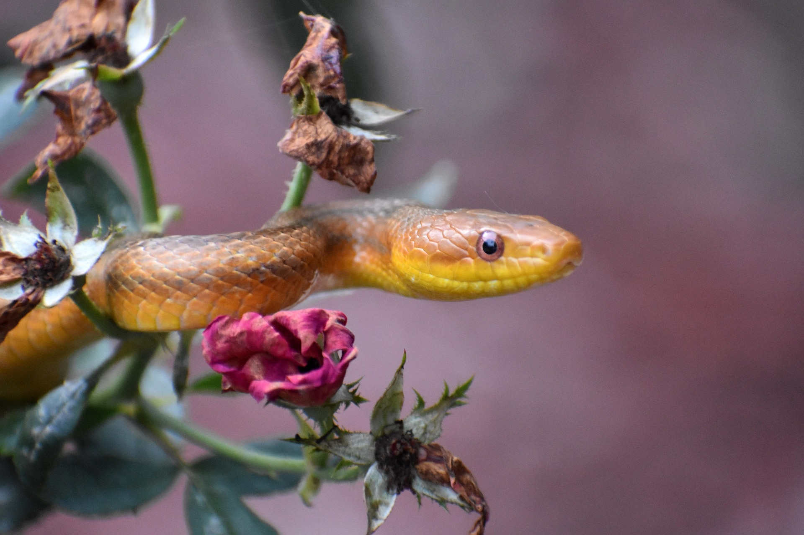

Welcome! Enjoy the World of Snakes
Silent, sleek, and perfectly adapted to their world.

King Cobra
The world's longest venomous snake, known for its intelligence and impressive hood.

Python
Pythons are non-venomous snakes that capture prey by constriction.

Green Anaconda
One of the heaviest snakes on Earth, living mainly in South American wetlands.

Russell's Viper
A highly venomous snake commonly found in South Asia.

Tiger Snake
A highly venomous snake commonly found in Australia and New Guinea.

Sand Boa
A small, non-venomous snake found in desert regions.

Rattle Snake
A highly venomous snake commonly found in North America.

Rat Snake
Rat snakes are non-venomous and pose no serious threat to humans.
Facts About Snakes
Snakes are legless, ectothermic reptiles found on every continent except Antarctica. There are over 3,000 species that hunt using unique
adaptations—such as smelling with their forked tongues, sensing vibrations through their jaws, and shedding their skin as they grow.
Senses & Anatomy
Smell with their tongue:
Snakes use their forked tongues to collect tiny scent particles from the air and the ground.
These particles are transferred to a specialized sensory structure called the Jacobson's organ, located in the roof of the mouth. This unique ability helps snakes locate prey,
detect predators, and navigate their surroundings with remarkable accuracy.No external ears:
Unlike many animals, snakes do not have external ears or eardrums.
Instead, they detect sounds by sensing vibrations that travel through the ground using their lower jaw bones. These vibrations are transmitted to the inner ear,
allowing snakes to sense the movement of nearby animals and potential threats.Transparent eyelids:
Snakes do not have movable eyelids, so they cannot blink like humans and many other animals.
Instead, each eye is protected by a transparent scale called a spectacle, which keeps the eye safe while allowing clear vision.
This protective covering is shed along with the snake's skin during the shedding process.Extreme flexibility:
Snakes have highly flexible skulls and loosely connected jaw bones,
allowing them to swallow prey much larger than their own heads. Strong ligaments and expandable skin help stretch the mouth during feeding.
This remarkable adaptation enables snakes to consume large meals that can sustain them for weeks or even months.Internal organs:
A snake's internal organs are specially arranged to fit its long, narrow body.
Instead of being positioned side by side, paired organs such as the kidneys are located one behind the other.
Most snake species also have only one fully developed functional lung,
allowing more space for other organs and large prey inside the body.
Learn more about snake senses and anatomy
Diet & Survival
Energy conservation:
Snakes are highly efficient at conserving energy between meals. When food is scarce,
their digestive system temporarily becomes less active, reducing energy use. After eating, their digestive organs rapidly expand and become highly active,
allowing them to digest large prey efficiently before returning to a resting state.Slow metabolism:
Snakes are ectothermic (cold-blooded) animals, meaning they rely on external
heat sources such as sunlight to regulate their body temperature. Because of their slow metabolism,
they require much less energy than mammals and can survive for weeks or even months after eating a single large meal.
This adaptation helps them thrive in environments where food is not always readily available.
Learn more about snake Diet and Survival
Reproduction
Egg layers vs. live birth:
Most snake species lay eggs, but many give birth to live young. Egg-laying snakes place their eggs in safe,
warm locations where they develop until hatching. Live-bearing snakes keep their young inside their bodies until they are fully developed, an adaptation that helps
species survive in colder environments. Both reproductive strategies have evolved to maximize the survival of the offspring.Asexual reproduction:
Some snake species, particularly certain boas and pythons, are capable of asexual reproduction,
a process known as parthenogenesis. In this rare form of reproduction, a female snake can produce offspring without mating with a male. Although uncommon in the wild,
parthenogenesis demonstrates the remarkable adaptability and survival strategies of some snake species.
Learn more about snake Reproduction
Diversity
Ancient origins:
Snakes evolved from ancient lizard-like ancestors more than 100 million years ago through a
long process of evolution. Over time, they gradually lost their limbs and developed long, flexible bodies adapted for crawling. Interestingly, some modern snakes, such as pythons and boas,
still possess tiny vestigial pelvic bones and small hind limb remnants, providing evidence of their evolutionary history.Size range:
Snakes vary greatly in size, making them one of the most diverse groups of reptiles.
The Barbados threadsnake is the smallest known snake, measuring only about 4 inches (10 cm) in length. In contrast,
the reticulated python is the world's longest snake and can grow to over 30 feet (9 meters),
demonstrating the remarkable range of sizes found among snake species.Global population:
Snakes are found on every continent except Antarctica and inhabit a wide variety of environments,
including forests, deserts, grasslands, mountains, wetlands, and oceans. However, they are naturally absent from a few isolated
regions such as Ireland, Iceland, Greenland, and New Zealand,
mainly because of their cold climates or geographic isolation.
Learn more about snake Diversity